[Tư vấn] Nên mua máy hút bụi nào tốt? Kinh nghiệm chọn mua máy hút bụi
Máy hút bụi là thiết bị cực kỳ cần thiết cho cuộc sống hiện đại, đầy bận rộn. Với khả năng làm sạch nhanh chóng và vượt trội, thiết bị mang đến nhiều tiện ích cho cuộc sống. Đứng trước sự đa dạng của thị trường sản phẩm máy hút bụi, nhiều khách hàng vẫn còn băn khoăn máy hút bụi nào tốt và phù hợp với nhu cầu sử dụng. Bài viết dưới đây sẽ giúp quý khách hàng đưa ra những gợi ý phù hợp nhất!
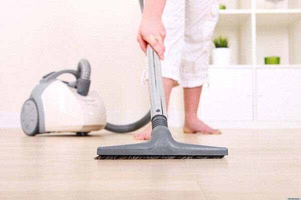
Máy hút bụi công nghiệp là gì?
Máy hút bụi công nghiệp là thiết bị đặc biệt được thiết kế với dung tích ngăn chứa bụi từ 15 lít trở lên và có công suất mạnh mẽ, giúp đảm bảo khả năng hút hiệu quả và linh hoạt. Đây là dòng máy vệ sinh chuyên dụng được ưa chuộng trong các nhà máy, bệnh viện và trường học với diện tích rộng lớn.
Với công suất mạnh mẽ, máy hút bụi công nghiệp không chỉ có khả năng loại bỏ bụi khô mà còn có thể hút nước. Đồng thời, những tính năng hiện đại của máy giúp nâng cao độ bền và hiệu suất hoạt động.
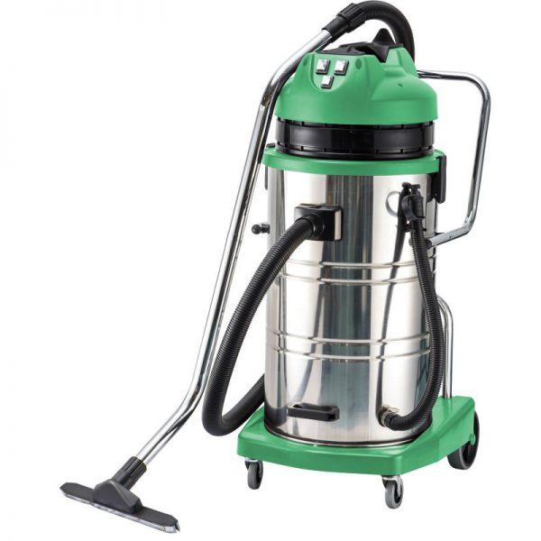
Máy hút bụi trên thị trường hiện nay có những loại nào?
Nhắc đến máy hút bụi ta nghĩ ngay đến loại thiết bị với khả năng hút sạch bụi bẩn, chất thải. Thế nhưng không dừng lại ở đó, mỗi chủng loại máy hút bụi khác nhau lại sở hữu những đặc điểm, tính năng riêng nhằm đáp ứng nhu cầu sử dụng đa dạng của thị trường. Cùng chúng tôi tìm hiểu các loại máy hút bụi đang có trên thị trường hiện nay!
Máy hút bụi cầm tay
Máy hút bụi cầm tay là một trong những dòng thiết bị được ưa chuộng nhất hiện nay. Với thiết kế nhỏ gọn, có tay cầm tiện dụng, người dùng có thể cầm nắm và thao tác dễ dàng hơn. Dòng máy hút bụi mini này thích hợp sử dụng cho các khu vực như: thảm ô tô, bàn phím máy tính, laptop, bàn học, ghế sofa,…
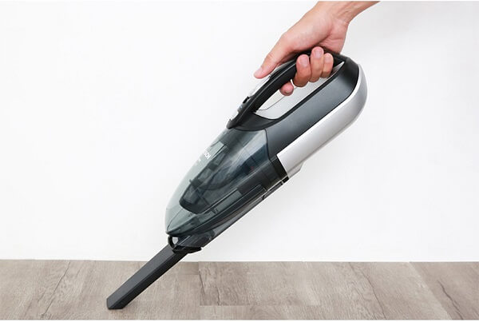
| Ưu điểm | Nhược điểm |
|
– Thiết kế nhỏ gọn, khá tiện lợi và dễ cầm nắm. – Giá thành rẻ, chỉ từ vài trăm nghìn đồng cho một sản phẩm. |
– Công suất hoạt động thấp. – Vận hành bằng pin nên phải thay pin thường xuyên. – Không hút được các loại bụi hay rác thải lớn. |
Máy hút bụi có túi chứa bụi
Máy hút bụi có túi chứa bụi là dòng sản phẩm đi kèm với phụ kiện túi đựng bụi. Sau khi hút sạch bụi bẩn và rác thải, phần túi chứa bụi có thể được tháo rời và mang đi vứt (đối với túi giấy) hoặc có thể tái sử dụng lại nhiều lần (đối với túi vải). Hiện nay, máy hút bụi với túi bụi vải được ưa chuộng sử dụng hơn so với túi giấy bởi khả năng kháng khuẩn, hút mùi hiệu quả.
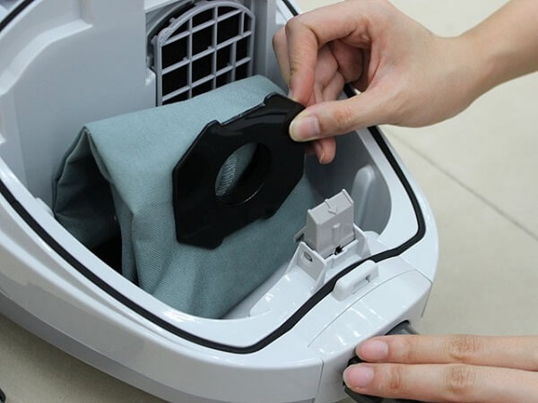
| Ưu điểm | Nhược điểm |
|
– Túi chứa bụi tiện lợi, tiết kiệm thời gian đổ bụi. – Chức năng tự đóng nắp khi tháo túi giúp hạn chế bụi bẩn bay ra ngoài không khí. – Túi vải có thể tái sử dụng sau khi giặt sạch, phơi khô. – Giá thành máy khá rẻ. |
– Tốn kém chi phí thay túi chứa bụi thường xuyên. – Nếu không thay túi mới kịp thời sẽ làm giảm hiệu suất máy, tiêu tốn điện năng. |
Máy hút bụi dạng hộp
Máy hút bụi dạng hộp sẽ được sử dụng rộng rãi trên thị trường hiện nay. Máy được thiết kế với nút điều chỉnh tiện lợi giúp cho người dùng linh hoạt hút bụi cho cả sàn cứng và thảm trải sàn.
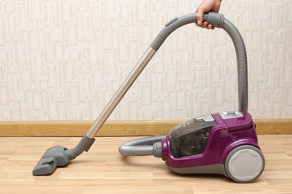
| Ưu điểm | Nhược điểm |
|
– Giá thành phải chăng, từ 1 – 3 triệu đồng/sản phẩm. – Thiết kế gọn nhẹ, dễ di chuyển. – Có hộp đựng bụi riêng, không tốn kém chi phí mua túi chứa bụi. – Trang bị bộ lọc HEPA giúp kháng khuẩn khử mùi cực tốt – Kèm theo nhiều loại đầu hút tiện lợi vệ sinh cho nhiều khu vực: gầm giường, gầm tủ, khu vực trên cao, rèm, thảm,… |
– Không phù hợp sử dụng cho các tấm thảm trải sàn quá dày. – Bộ lọc sau một thời gian cần được vệ sinh và bảo dưỡng để tránh giảm hiệu suất máy. |
Máy hút bụi tự động
Máy hút bụi tự động (hay Robot hút bụi lau nhà) là loại máy hút bụi có thiết kế nhỏ gọn, hiện đại và vận hành hoàn toàn tự động. Thiết bị kết hợp cả chức năng hút bụi và lau nhà tiện dụng, là giải pháp cực kỳ phù hợp cho cuộc sống hiện đại bận rộn.
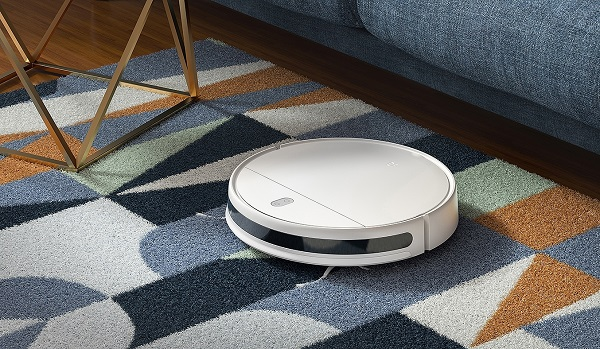
| Ưu điểm | Nhược điểm |
|
– Thiết kế nhỏ gọn, hiện đại. – Tích hợp chức năng hút bụi, lau nhà trong cùng sản phẩm. – Cảm biến hiện đại giúp tránh chướng ngại vật, cầu thang trong quá trình hoạt động. – Tự động sạc khi hết pin. |
– Giá thành sản phẩm tương đối cao, dao động từ 5 – 20 triệu đồng/sản phẩm. – Thích hợp sử dụng trên bề mặt phẳng, khó vệ sinh và góc tường. |
Máy hút bụi công nghiệp với công suất lớn
Khác với các dòng máy hút bụi kể trên, máy hút bụi công nghiệp là loại thiết bị chuyên dụng dành cho các nhà xưởng, khu công nghiệp hoặc khu vực có quy mô rộng lớn. Máy hút bụi công nghiệp cũng rất đa dạng về thiết kế, kiểu dáng, tính năng,… nhưng nhìn chung đều sở hữu công suất hút lớn. Nhờ vậy khâu vệ sinh nhà xưởng được thực hiện nhanh chóng và hiệu quả nhất.
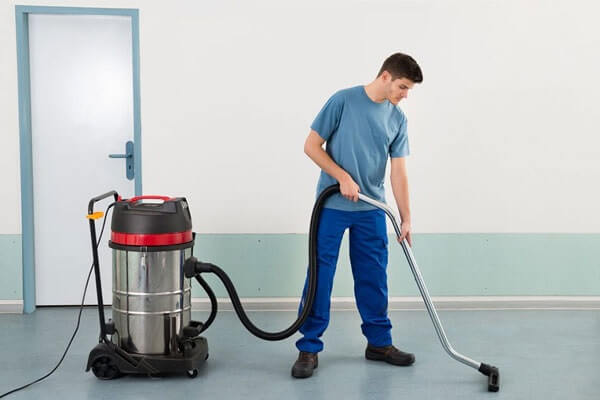
| Ưu điểm | Nhược điểm |
|
– Động cơ mạnh mẽ, công suất hút lớn cho khả năng hút sạch bụi bẩn hiệu quả trong thời gian ngắn. – Đầu hút lớn hút được mọi loại bụi bẩn. – Nhiều phụ kiện kèm theo hỗ trợ hút bụi cho nhiều vị trí khác nhau. |
– Trọng lượng thiết bị khá nặng và cồng kềnh khi di chuyển. – Khi vận hành sẽ phát ra tiếng ồn khá lớn. |
Tại sao nên sử dụng máy hút bụi hiện nay
Dưới đây là một số lợi ích khi sử dụng máy hút bụi hiện nay:
- Hiệu quả trong việc làm sạch bụi bẩn: Máy hút bụi có khả năng loại bỏ mọi loại bụi nhỏ như tóc, lông thú trên các bề mặt đa dạng như sàn gỗ, sàn gạch men cho đến thảm.
- Tiết kiệm thời gian và công sức: Việc sử dụng máy hút bụi không chỉ giúp bạn làm sạch ngôi nhà mà còn làm tăng quá trình vệ sinh, đảm bảo ngôi nhà của bạn luôn ở trạng thái sạch sẽ 100%.
- Bảo vệ sức khỏe: Máy hút bụi có khả năng loại bỏ các hạt bụi mịn, vi khuẩn và các tác nhân gây dị ứng trong không khí và giúp bảo vệ sức khỏe của bạn và gia đình khỏi những vấn đề về đường hô hấp.
Tư vấn kinh nghiệm chọn mua máy hút bụi tốt nhất
“Máy hút bụi loại nào tốt?”, “Máy hút bụi hãng nào tốt?” – Để trả lời cho các câu hỏi trên, ta sẽ cần cân nhắc đến nhiều yếu tố khác nhau. Để giúp quý khách hàng tìm ra câu trả lời, chúng tôi xin gợi ý một vài yếu tố cơ bản cần xem xét khi chọn mua máy hút bụi như sau:
Chọn sản phẩm phù hợp với mục đích sử dụng
Tùy thuộc vào mục đích sử dụng cũng như khả năng tài chính của mình mà khách hàng sẽ có những lựa chọn phù hợp. Nếu bạn chỉ có nhu cầu sử dụng sản phẩm nhỏ gọn, tiện dụng với giá thành rẻ thì chiếc máy hút bụi cầm tay sẽ rất phù hợp. Ngược lại nếu có khả năng tài chính tốt hơn, nhu cầu sử dụng thường xuyên hơn thì nên cân nhắc chọn robot hút bụi lau nhà hiện đại, đa chức năng.
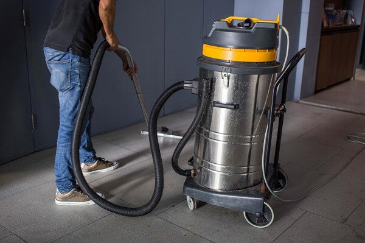
Trường hợp khách hàng là doanh nghiệp đang tìm mua sản phẩm máy hút bụi công suất cao thì không gì phù hợp một chiếc máy hút bụi công nghiệp. Giá bán của máy hút bụi nhà xưởng khá chênh lệch với máy hút bụi gia đình nhưng tương ứng với đó là hiệu suất làm việc cực cao.
Nên mua máy hút bụi công suất bao nhiêu?
“Máy hút bụi nào tốt?” – Một thiết bị hút bụi được xem là tốt trước hết cần phải phù hợp với nhu cầu khách hàng. Công suất máy hút bụi chính là một trong những cơ sở để đánh giá liệu sản phẩm có phù hợp với nhu cầu sử dụng hay không. Lưu ý nên phân biệt giữa công suất hút (lực hút) và công suất máy (sự tiêu thụ điện năng) của thiết bị.
- Với nhu cầu vệ sinh, hút bụi thường ngày trong gia đình, máy hút bụi cần có công suất hút từ 200 – 400W để quá trình vệ sinh được nhanh chóng, tiết kiệm thời gian hơn.
- Với nhu cầu vệ sinh nhà xưởng, khu công nghiệp, chiếc máy hút bụi công nghiệp sẽ cần công suất khá lớn từ 1000 – 3000W. Lực hút mạnh mẽ giúp dọn sạch mọi bụi bẩn, rác thải trong thời gian ngắn.
Bên cạnh công suất hút, khách hàng nên ưu tiên chọn các sản phẩm có công suất máy vừa phải, không quá cao để tránh tiêu hao nhiều điện năng.
Kích cỡ và trọng lượng máy
Kích cỡ và trọng lượng máy là yếu tố tiếp theo để đánh giá máy hút bụi nào tốt hiện nay. Với những ngôi nhà có diện tích không quá lớn thì nên cân nhắc chọn máy hút bụi dạng hộp hoặc cầm tay mini, vừa đáp ứng nhu cầu vệ sinh lại vừa nhỏ gọn dễ cất giữ.
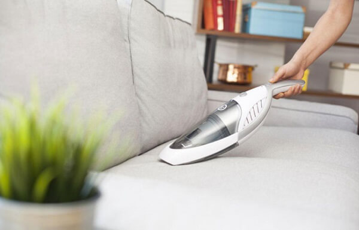
Trường hợp sử dụng máy hút bụi cho khâu vệ sinh công nghiệp, sân bay, bệnh viện, trường học,… khách hàng có thể lựa chọn các dòng máy hút bụi kích thước lớn. Nhờ vậy, quá trình hút bụi diễn ra liên tục và tiết kiệm được thời gian đổ bụi.
Độ ồn của máy hút bụi
Đừng quên cân nhắc tiêu chí độ ồn của thiết bị khi chọn mua máy hút bụi. Nhiều sản phẩm khi vận hàng có độ ồn cực kỳ lớn, gây ảnh hưởng ít nhiều đến sinh hoạt và môi trường xung quanh. Do đó, độ ồn thiết bị càng thấp sẽ càng được ưu tiên lựa chọn. Quý khách hàng nên cân nhắc các sản phẩm có độ ồn trong khoảng từ 40 – 75dB.
Các tính năng của máy hút bụi
Bên cạnh chức năng hút bụi, các sản phẩm với đa dạng các tính năng kèm theo sẽ là lựa chọn tuyệt vời đáng để cân nhắc. Một vài tính năng hữu dụng được tích hợp trong các thiết bị hút bụi hiện đại như:
- Tính năng đèn báo bụi: cảnh báo kịp thời khi túi đựng bụi đầy và cần phải xả bụi, tránh làm giảm hiệu suất hoạt động của máy.
- Màng lọc bụi: giúp tăng khả năng làm sạch không khí, loại bỏ các hạt bụi nhỏ dễ dàng hơn.
- Chức năng kháng khuẩn: bảo vệ da và hô hấp tốt hơn.
- …
Các phụ kiện kèm theo
Để tăng sự tiện nghi cho quá trình sử dụng, bạn cũng nên cân nhắc lựa chọn các dòng máy hút bụi đi kèm nhiều loại phụ kiện đầu hút. Một vài loại phụ kiện như: đầu dẹt, đầu hút có bàn chải, đầu tròn, đầu hút nước, ống nối,… đều hỗ trợ làm sạch một cách linh hoạt hơn.
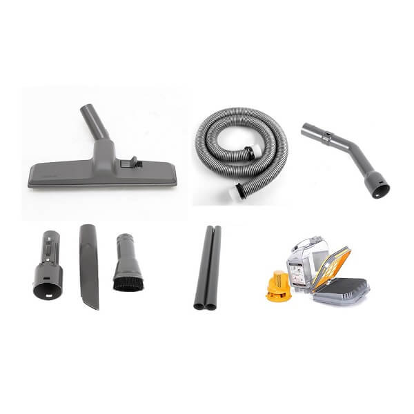
Máy hút bụi hãng nào tốt nhất trên thị trường hiện nay?
Máy hút bụi hãng nào tốt? – Hiện nay trên thị trường có rất nhiều thương hiệu máy hút bụi nổi tiếng, được nhiều khách hàng tin dùng. Chúng tôi đã tổng hợp TOP 5 thương hiệu máy hút bụi tốt nhất để khách hàng có thể tham khảo lựa chọn:
Máy hút bụi Bosch
Bosch là thương hiệu nổi tiếng từ Đức, được thành lập từ năm 1886. Các sản phẩm của thương hiệu này được đánh giá cao trên thị trường bởi khả năng vận hành ổn định, bền bỉ. Máy hút bụi Bosch còn được trang bị túi chứa bụi MegaFilt Super TEX, tự niêm phong khi mở nắp. Nhờ vậy, bụi bẩn được giữ kín trong túi chứa, giúp cho không gian sống trong lành, tinh sạch.
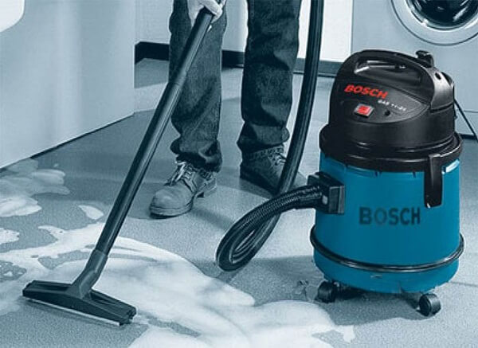
Một vài model máy hút bụi Bosch được tin dùng trên thị trường như: HMH.BGN21800 1800W, HMH.BGL72294 2200W, HMH.BGS3U2000 2000W,…
Máy hút bụi Hitachi
Thương hiệu Hitachi thành lập năm 1910 là thương hiệu có lịch sử khá lâu đời. Hãng nổi tiếng với các sản phẩm công nghiệp, gia dụng cao cấp với hiệu quả làm việc vượt trội. Máy hút bụi Hitachi chính là câu trả lời cho những băn khoăn: “máy hút bụi nào tốt?”, “máy hút bụi hãng nào tốt?”.
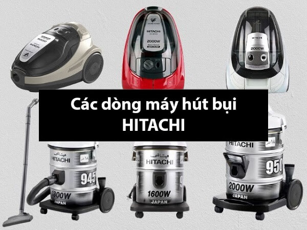
Hitachi không ngừng cải tiến và phát triển nhằm mang đến các sản phẩm ngày càng ưu việt. Dòng máy hút bụi Hitachi nổi bật với thiết kế hiện đại, đặc tính an toàn và độ bền bỉ. Các sản phẩm của hãng cũng ưu tiên về sự nhỏ gọn, đa dạng model sản phẩm và khả năng hút bụi, làm sạch nhanh.
Máy hút bụi công nghiệp Fiorentini
Các dòng máy hút bụi Fiorentini được sản xuất trên dây chuyền công nghệ hiện đại của Italia. Hãng chuyên sản xuất và cung cấp ra thị trường các dòng máy hút bụi công nghiệp, nhà xưởng công suất lớn. Với công suất hút mạnh mẽ, khả năng vận hành bền bỉ và ổn định trong nhiều môi trường, thiết bị hút bụi Fiorentini là giải pháp hàng đầu cho các khách hàng doanh nghiệp. Các model sản phẩm bán chạy nhất có thể kể đến: Máy hút bụi Fiorentini F30F1, Máy hút bụi nước Fiorentini C73F1,…
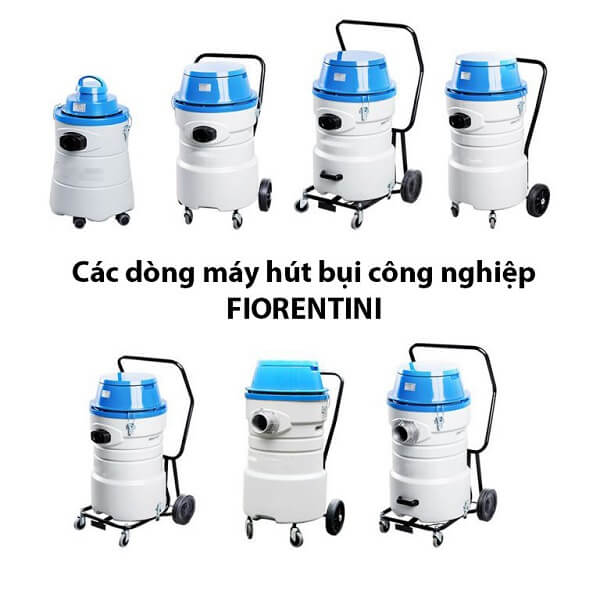
Máy hút bụi Karcher
Karcher là một trong những thương hiệu dẫn đầu trong lĩnh vực công nghệ làm sạch. Thương hiệu này chuyên cung cấp thiết bị làm sạch gia dụng và công nghiệp. Máy hút bụi Karcher rất đa dạng về kiểu dáng, kích thước và công năng. Sản phẩm của hãng luôn được kết hợp công suất hút cao với khả năng di chuyển, thao tác linh hoạt. Đây chắc chắn sẽ là câu trả lời hoàn hảo cho những băn khoăn “máy hút bụi nào tốt hiện nay?”
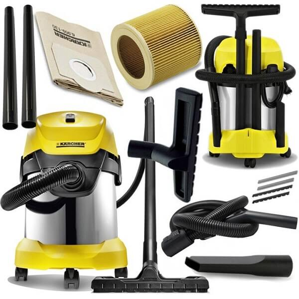
Máy hút bụi Delfin
Delfin là thương hiệu chuyên cung cấp và sản xuất các loại máy móc, thiết bị hàng đầu từ Italia. Các sản phẩm của hãng được trang bị những công nghệ hiện đại, tiên tiến nhất. Các giải pháp làm sạch từ Delfin được thị trường đánh giá cao phải kể đến: máy hút bụi cầm tay chân không, hệ thống hút bụi, máy hút bụi công nghiệp,… Chắc chắn bạn sẽ tìm được sản phẩm phù hợp với hệ thống sản phẩm đa dạng từ Delfin.
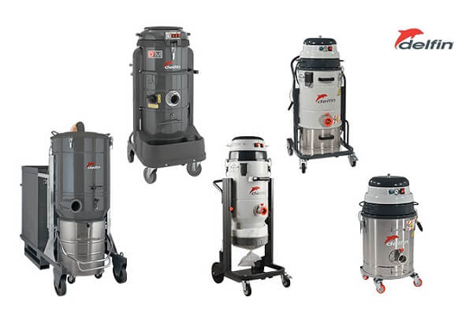
Đơn vị phân phối máy hút bụi uy tín, chính hãng
Như đã đề cập ở trên, để tìm được câu trả lời cho băn khoăn của nhiều khách hàng “Máy hút bụi nào tốt?”, ta sẽ cần xem xét rất nhiều yếu tố khác nhau. Mỗi dòng máy hút bụi đến từ các hãng sản xuất khác nhau sẽ có những ưu nhược điểm riêng. Hy vọng với những gợi ý trên đây, quý khách hàng xe có thêm cơ sở để lựa chọn máy hút bụi phù hợp.
Một số lưu ý khi lựa chọn máy hút bụi
Trong quá trình chọn lựa máy hút bụi, bạn cần chú ý đến những điều sau đây:
- Công suất hút: Công suất hút là yếu tố quan trọng nhất để đánh giá hiệu quả của máy hút bụi. Đối với máy có công suất lớn, khả năng hút sạch bụi bẩn càng cao.
- Tính năng: Máy hút bụi hiện nay được trang bị nhiều tính năng tiện ích giúp quá trình làm sạch nhà cửa trở nên dễ dàng và hiệu quả hơn. Các tính năng phổ biến bao gồm công nghệ hút cyclonic, lọc HEPA và chức năng tự động cuốn dây điện.
- Giá cả: Giá của máy hút bụi dao động từ vài triệu đến vài chục triệu đồng. Bạn nên lựa chọn máy có giá phù hợp với ngân sách của mình.
- Thương hiệu: Máy hút bụi từ các thương hiệu nổi tiếng thường có chất lượng và độ bền cao. Bạn có thể lựa chọn máy hút bụi từ các thương hiệu uy tín như Toshiba, Panasonic, Philips và các thương hiệu khác.
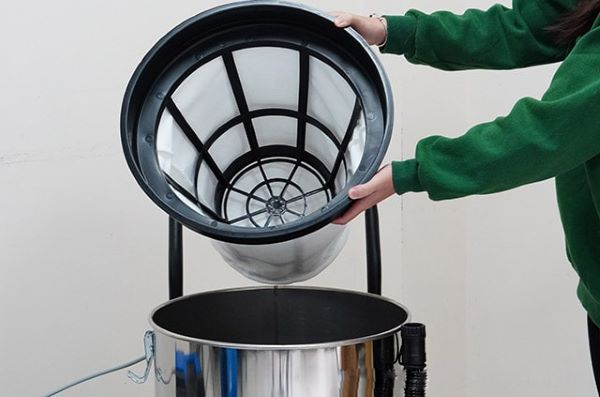
Một số câu hỏi thường gặp
Công suất của của các loại máy hút bụi là bao nhiêu?
Công suất của máy hút bụi được đo bằng watt (W). Công suất càng cao và lực hút càng mạnh. Các loại máy hút bụi khác nhau có công suất khác nhau:
- Máy hút bụi cầm tay: 200-800W
- Máy hút bụi robot: 15-200W
- Máy hút bụi hộp: 350-2000W
- Máy hút bụi công nghiệp: 1000-3500W
Công suất hút bụi là lượng khí mà máy hút bụi có thể di chuyển trong một đơn vị thời gian. Nó được đo bằng mét khối mỗi giờ (m³/h). Công suất hút bụi càng cao, máy hút bụi càng có thể hút nhiều bụi bẩn hơn.
Các loại máy hút bụi có sử dụng đèn báo hay không?
Có, nhiều loại máy hút bụi hiện nay có sử dụng đèn báo. Các loại đèn báo phổ biến trên máy hút bụi bao gồm:
Đèn báo bụi đầy:
- Loại đèn báo này thường được đặt ở hộp chứa bụi. Khi hộp chứa bụi đầy, đèn sẽ báo sáng để người dùng biết cần đổ bụi.
- Việc sử dụng đèn báo bụi đầy giúp người dùng tránh tình trạng hộp chứa bụi quá đầy, làm giảm hiệu quả hút bụi và có thể gây hư hỏng máy.
Đèn báo pin:
- Loại đèn báo này thường được sử dụng trên máy hút bụi không dây. Đèn báo pin sẽ hiển thị mức pin còn lại của máy, giúp người dùng biết khi nào cần sạc pin.
- Việc sử dụng đèn báo pin giúp người dùng tránh tình trạng máy hết pin đột ngột, làm gián đoạn quá trình hút bụi.
Đèn báo lỗi:
- Loại đèn báo này sẽ báo sáng khi máy hút bụi gặp lỗi. Đèn báo lỗi thường đi kèm với hướng dẫn sử dụng để người dùng có thể xác định và khắc phục lỗi.
- Việc sử dụng đèn báo lỗi giúp người dùng dễ dàng khắc phục các vấn đề của máy hút bụi, tiết kiệm thời gian và chi phí sửa chữa.
Ngoài ra, một số loại máy hút bụi còn có các loại đèn báo khác như đèn báo nguồn, đèn báo chế độ hút bụi, v.v.
Máy hút bụi có được trang bị túi đựng bụi hay không?
Có, máy hút bụi có thể được trang bị túi đựng bụi. Máy hút bụi có túi đựng bụi có hai loại chính:
Máy hút bụi dùng túi:
- Loại máy này sử dụng túi vải hoặc giấy để chứa bụi bẩn. Khi túi đầy, bạn cần tháo ra và thay túi mới.
- Máy hút bụi dùng túi có ưu điểm là dễ sử dụng, vệ sinh đơn giản và có thể giữ cho không khí trong nhà sạch sẽ hơn. Tuy nhiên, bạn cần phải mua và thay túi bụi thường xuyên.
Máy hút bụi không dùng túi:
- Loại máy này sử dụng hộp chứa bụi bằng nhựa để chứa bụi bẩn. Sau khi sử dụng, bạn cần tháo hộp chứa bụi ra và đổ bụi bẩn đi.
- Máy hút bụi không dùng túi có ưu điểm là tiết kiệm chi phí vì bạn không cần mua túi bụi. Tuy nhiên, việc vệ sinh hộp chứa bụi có thể phức tạp hơn và có thể làm cho không khí trong nhà bị ô nhiễm bởi bụi bẩn.
ICD CLEANING MACHINE là đơn vị chuyên cung cấp máy hút bụi công nghiệp công suất lớn chất lượng cao, giá tốt nhất! Chúng tôi sở hữu nhiều dòng máy hút bụi nhà xưởng đáp ứng được nhu cầu đa dạng của thị trường hiện nay!
Mọi thắc mắc hay cần tư vấn thêm thông tin về sản phẩm, vui lòng liên hệ với chúng tôi qua hotline: 0989 449 198.
**TÌM HIỂU THÊM: Máy chà sàn nhà xưởng chính hãng, giá tốt
 Tư vấn cách chọn lựa máy chà sàn nhà gia đình
Tư vấn cách chọn lựa máy chà sàn nhà gia đình Có nên mua máy hút bụi công nghiệp cho gia đình?
Có nên mua máy hút bụi công nghiệp cho gia đình? TOP 5 máy hút bụi công nghiệp 3000W bán chạy đáng đầu tư
TOP 5 máy hút bụi công nghiệp 3000W bán chạy đáng đầu tư